DiagrammeR Docs
Get an overview of DiagrammeR, learn the syntax, check out some examples.
Get an overview of DiagrammeR, learn the syntax, check out some examples.
Graphviz support is an integral part of the DiagrammeR package. Graphviz consists of a graph description language called the DOT language and it also comprises various tools that can process the DOT language. DOT is highly customizable and it allows you to control line colors, arrow shapes, node shapes, and many other layout features.
For Graphviz graphs, DiagrammeR uses the processing function called grViz(). What you pass into grViz() is a valid graph specification in the DOT language. The DOT graph description can either be delivered to grViz() in the form of a string, a reference to a Graphviz file (with a .gv file extension), or as a text connection.
All of the code examples provided in later sections call the grViz() function in an R script and pass in a graph description as a string. It is important to consider that strings in R cannot contain any unescaped double-quote characters. However, the grViz() function allows for single-quote characters in their place. As a further convenience, when the DOT graph description is supplied as a file (e.g., 'dot-graph.gv') or as a text connection, either format for quotes will be accepted.
In very recent builds of RStudio, the use of an external text file with the .gv file extension can provide the advantage of syntax coloring and previewing in the RStudio Viewer pane after saving (if 'Preview on Save' is selected), or, by pressing the 'Preview' button on the Source pane.

The Graphviz graph specification must begin with a directive stating whether a directed graph (digraph) or an undirected graph (graph) is desired. Semantically, this indicates whether or not there is a natural direction from one of the edge's nodes to the other. An optional graph ID follows this and paired curly braces denotes the body of the statement list (stmt_list).
Optionally, a graph may also be described as strict. This forbids the creation of multi-edges (i.e., there can be at most one edge with a given tail node and head node in the directed case). For undirected graphs, there can be at most one edge connected to the same two nodes. Subsequent edge statements using the same two nodes will identify the edge with the previously defined one and apply any attributes given in the edge statement.
Here is the basic structure:
[strict] (graph | digraph) [ID] '{' stmt_list '}'The graph statement (graph_stmt), the node statement (node_stmt), and the edge statement (edge_stmt) are the three most commonly used statements in the Graphviz DOT language. Graph statements allow for attributes to be set for all components of the graph. Node statements define and provide attributes for graph nodes. Edge statements specify the edge operations between nodes and they supply attributes to the edges. For the edge operations, a directed graph must specify an edge using the edge operator -> while an undirected graph must use the -- operator.
Within these statements follow statement lists. Thus for a node statement, a list of nodes is expected. For an edge statement, a list of edge operations. Any of the list items can optionally have an attribute list (attr_list) which modify the attributes of either the node or edge.
Comments may be placed within the statement list. These can be marked using a // or a /* */ structure. Comment lines are denoted by a # character. Multiple statements within a statement list can be separated by linebreaks or ; characters between multiple statements
Here is an example where nodes (in this case styled as boxes and circles) can be easily defined along with their connections:

grViz("
digraph boxes_and_circles {
# a 'graph' statement
graph [overlap = true, fontsize = 10]
# several 'node' statements
node [shape = box,
fontname = Helvetica]
A; B; C; D; E; F
node [shape = circle,
fixedsize = true,
width = 0.9] // sets as circles
1; 2; 3; 4; 5; 6; 7; 8
# several 'edge' statements
A->1 B->2 B->3 B->4 C->A
1->D E->A 2->4 1->5 1->F
E->6 4->6 5->7 6->7 3->8
}
")Subgraphs play three roles in Graphviz. First, a subgraph can be used to represent graph structure, indicating that certain nodes and edges should be grouped together. This is the usual role for subgraphs and typically specifies semantic information about the graph components. It can also provide a convenient shorthand for edges. An edge statement allows a subgraph on both the left and right sides of the edge operator. When this occurs, an edge is created from every node on the left to every node on the right. For example, the specification
A -> {B C}is equivalent to
A -> B
A -> CIn the second role, a subgraph can provide a context for setting attributes. For example, a subgraph could specify that blue is the default color for all nodes defined in it. In the context of graph drawing, a more interesting example is
subgraph {
rank = same; A; B; C;
}This anonymous subgraph specifies that the nodes A, B and C should all be placed on the same rank.
The third role for subgraphs directly involves how the graph will be laid out by certain layout types. If the name of the subgraph begins with cluster, Graphviz notes the subgraph as a special cluster subgraph. If supported, the layout will make it such that the nodes belonging to the cluster are drawn together, with the entire drawing of the cluster contained within a bounding rectangle.
Graphviz attributes allow you to style your Graphviz graph. Combinations of attributes for nodes, edges, clusters, and for the entire graph provide for highly-customized layouts.
All Graphviz attributes are specified by name-value pairs. Thus, to set the fillcolor of a node abc, one would use
abc [fillcolor = red]Edge attributes are set the same way as node attributes. For example, to set the arrowhead style of an edge abc -> def, one would use
abc -> def [arrowhead = diamond]Quotation marks are important only for multiword attributes, such might be used in the label attribute.
By default, Graphviz can use colors provided as hexadecimal values, or, as X11 color names. The following provides the entire list of X11 color names. Some colors have additional 4-color palettes based on the named color. Those additional colors can be used by appending the digits 1-4 to the color name. Gray (or grey) has variations from 0-100. Please note that, in all color names, 'gray' is interchangeable with 'grey'.

There's no shortage of shapes available for nodes. Nodes can be changed from the default ellipse shape by using the shape parameter. This table provides a listing of all the possible node shapes.
| Node Appearance | Value for shape |
|---|---|
| 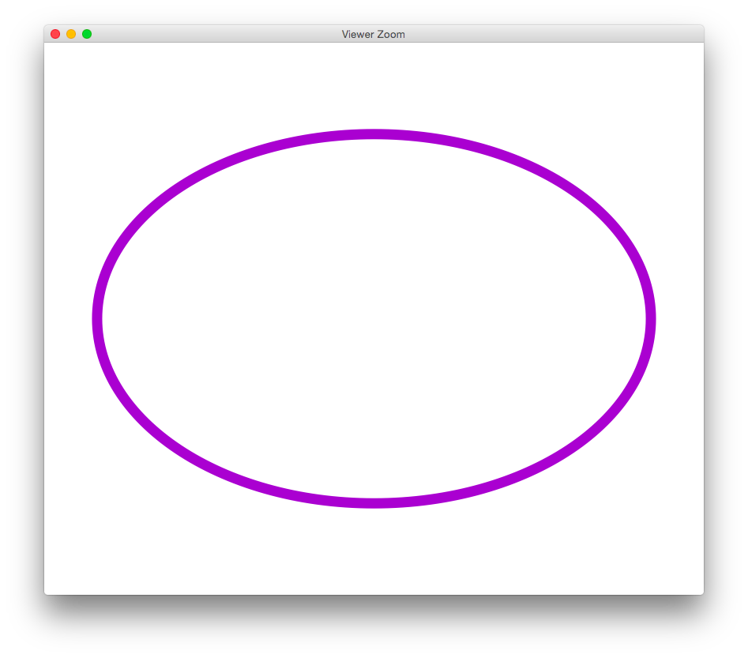 | oval |
| 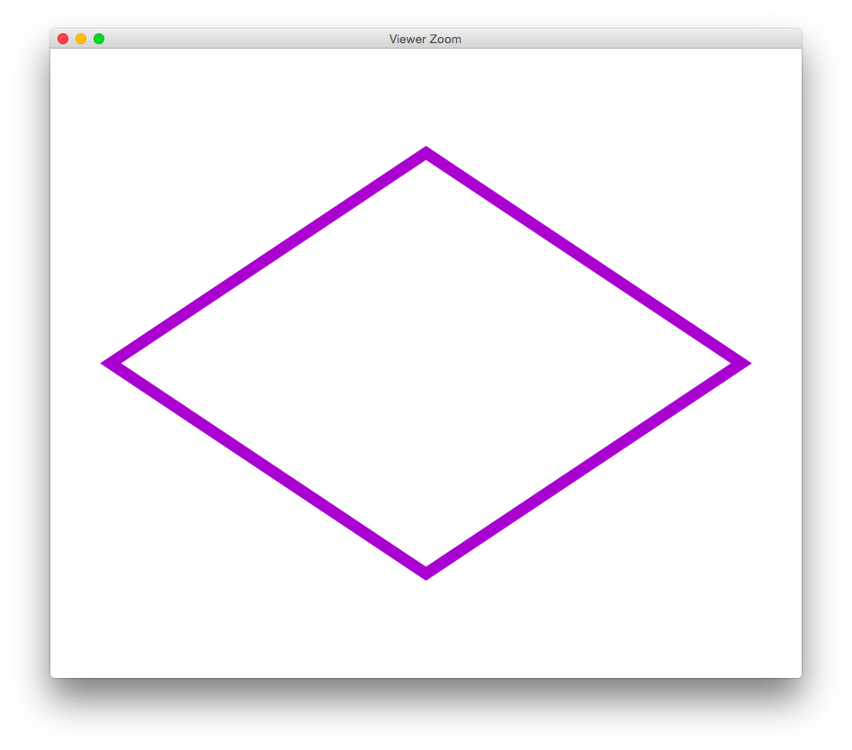 | diamond |
| 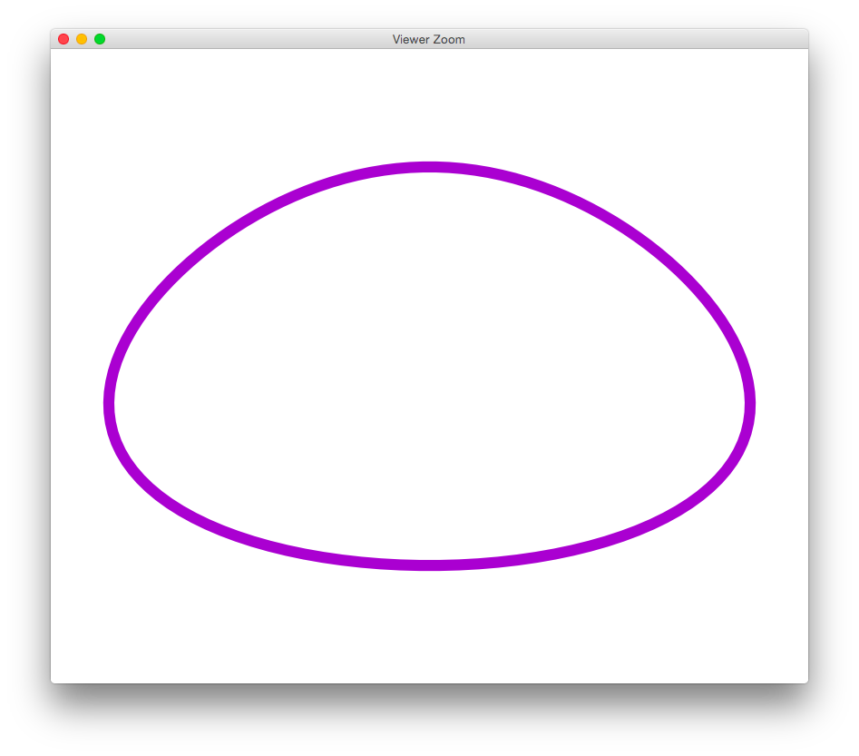 | egg |
| 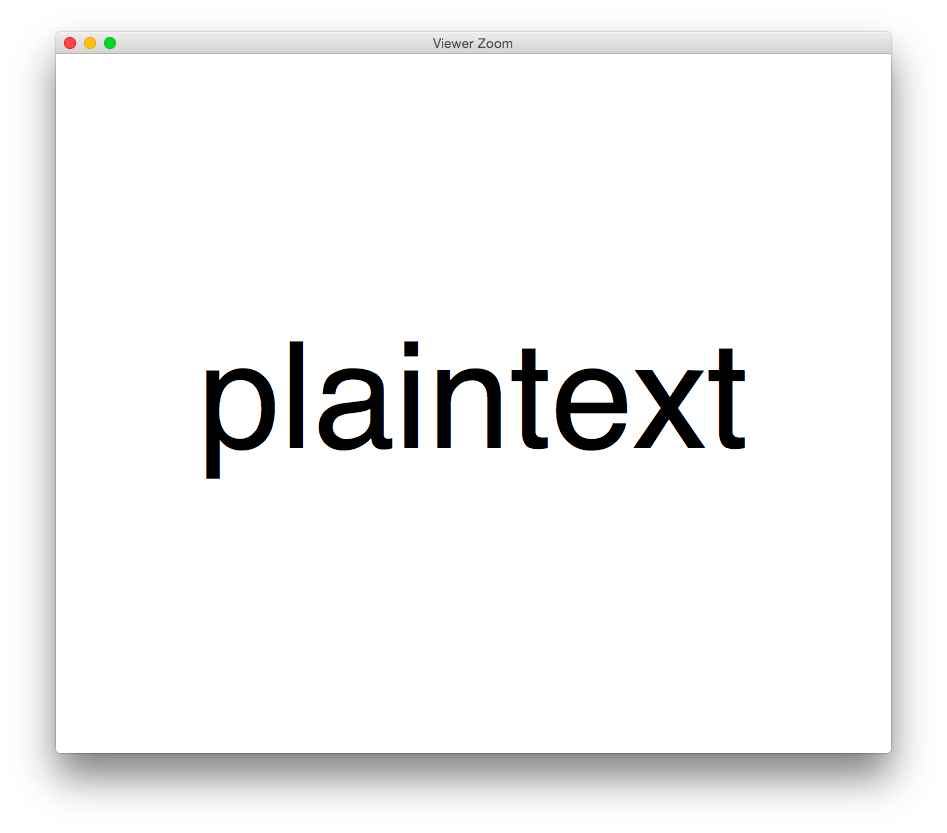 | plaintext |
| 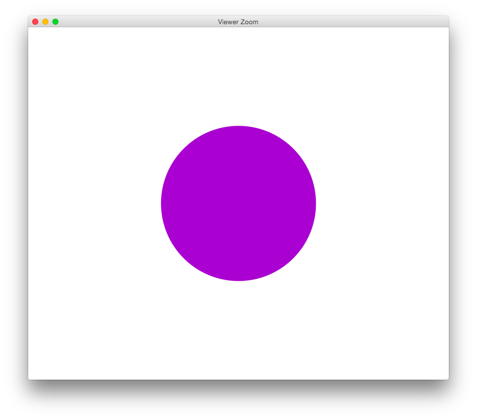 | point |
| 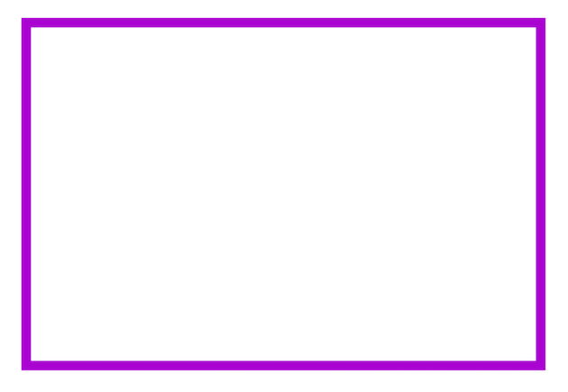 | square |
| 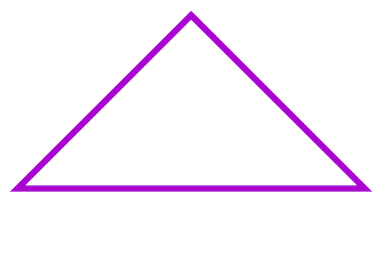 | triangle |
The shapes of arrows are highly customizable. When defining an edge, the arrowhead parameter allows you change the style of arrowhead from the default normal arrow shape, to one of several others. Here are some of the other arrowhead types that could be used.
| Arrow Appearance | Value for arrowhead |
|---|---|
| 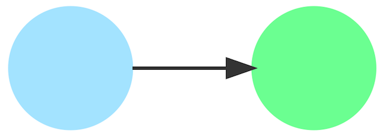 | normal |
| 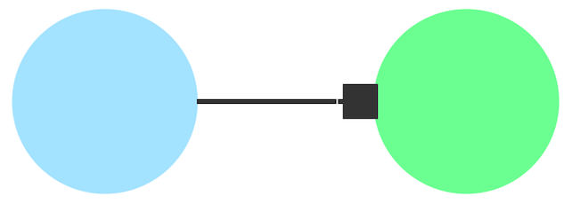 | box |
| 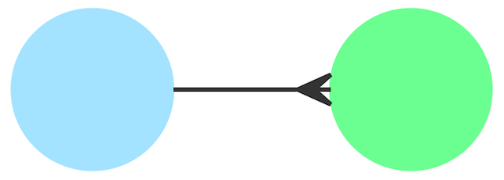 | crow |
| 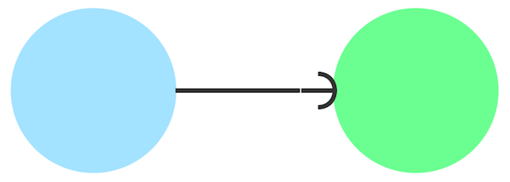 | curve |
| 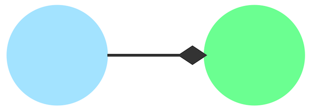 | diamond |
| 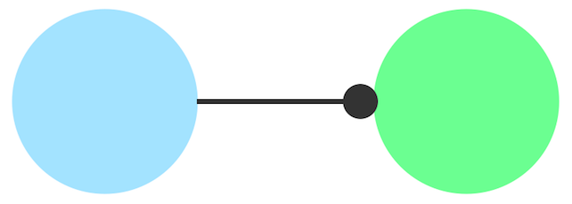 | dot |
| 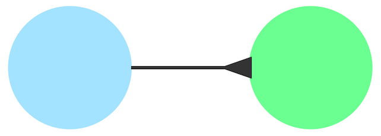 | inv |
| 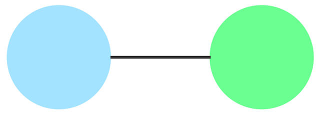 | none |
| 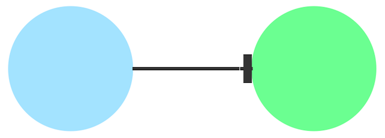 | tee |
| 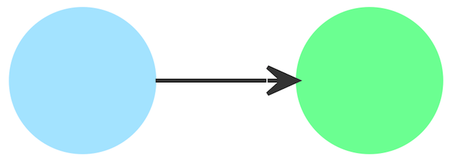 | vee |
Inspired by Razor and the footnote style in Markdown, Graphviz substitution allows for mixing in R expressions into a Graphviz graph specification without sacrificing readability.
To take advantage of substitution when rendering a graph, simply use the grViz() function with Graphviz DOT code:
grViz("[...graph spec with substitutions using @@ notation and footnote R expressions...]")The notation @@ within GraphViz DOT will indicate where the substitution is to take place and corresponding R expressions will provide values to be substituted. The grViz() function will autodetect whether the working Graphviz graph specification contains @@s between the curly braces of the [graph|digraph] {...} DOT construction.
grViz("
[...graph spec with substitutions using @@ notation and footnote R expressions...]
")If you specify a subsitution with @@, you must ensure there is a valid expression for that substitution. The expressions are placed as footnotes and their evaluations must result in an R vector object (i.e., not a data frame, list, or matrix). Because there is the possibility to have multiple substitutions, numbering is required. Thus, the @@ notation is immediately followed by a number and that number should correspond to the number of the footnoted R expression.
The substitution construction is:
"@@" + [footnote number]Importantly, the footnote expressions should reside below the closing curly brace of the graph or digraph expression. It should always take the form of:
"[" + [footnote number] + "]:"In the simple example of specifying a single node, the following substitution syntax would be used:
digraph {
@@1
}
[1]: 'a'In the above example, the [1]: footnote expression evaluates as 'a', and, that is what's substituted in place of the @@1 (where, in turn, it will be taken as the node ID).
Substitutions can also be used to insert values from vector indices into the graph specification. Simply use this format:
"@@" + [footnote number] + "-" + [index number]Here's an example of how specific values from vectors can be inserted into the graph:
digraph {
alpha
@@1-1; @@1-2; @@1-3; @@1-4; @@1-5
@@1-6; @@1-7; @@1-8; @@1-9; @@1-10
}
[1]: LETTERSAfter evaluation of the footnote expressions and substitution, the graph specification becomes this:
digraph {
alpha
A; B; C; D; E
F; G; H; I; J
}The best way to demonstrate how substitution works is through a set of examples. Here is an example of substituting alphabet letters from R's LETTERS constant into a Graphviz graph specification.
You can mix subtitutions of single-values objects and those specifying indices of R vector objects. As an example:

grViz("
digraph a_nice_graph {
# node definitions with substituted label text
node [fontname = Helvetica]
a [label = '@@1']
b [label = '@@2-1']
c [label = '@@2-2']
d [label = '@@2-3']
e [label = '@@2-4']
f [label = '@@2-5']
g [label = '@@2-6']
h [label = '@@2-7']
i [label = '@@2-8']
j [label = '@@2-9']
# edge definitions with the node IDs
a -> {b c d e f g h i j}
}
[1]: 'top'
[2]: 10:20
")As can be seen from the output:
a is given the label "top" (after substituting @@1 with expression after the [1]: footnote expression)b to j are respectively provided values from indices 1 to 9 (using the hypenated form of @@) of the evaluated expression 10:20 (in the [2]: footnote expression)Footnote expressions are meant to be flexible. They can span multiple lines, and they can also take in objects that are available in the global workspace. So, as long as a vector object results from evaluation, substitution can be performed.
Here is a final example of a diagram created using R and RStudio information (obtained from the R.Version() and rstudioapi::versionInfo() functions). The output will of course vary by the system on which it was generated. Here is the output from the dev machine:
grViz("
digraph nicegraph {
# graph, node, and edge definitions
graph [compound = true, nodesep = .5, ranksep = .25,
color = crimson]
node [fontname = Helvetica, fontcolor = darkslategray,
shape = rectangle, fixedsize = true, width = 1,
color = darkslategray]
edge [color = grey, arrowhead = none, arrowtail = none]
# subgraph for R information
subgraph cluster0 {
node [fixedsize = true, width = 3]
'@@1-1' -> '@@1-2' -> '@@1-3' -> '@@1-4'
'@@1-4' -> '@@1-5' -> '@@1-6' -> '@@1-7'
}
# subgraph for RStudio information
subgraph cluster1 {
node [fixedsize = true, width = 3]
'@@2' -> '@@3'
}
Information [width = 1.5]
Information -> R
Information -> RStudio
R -> '@@1-1' [lhead = cluster0]
RStudio -> '@@2' [lhead = cluster1]
}
[1]: paste0(names(R.Version())[1:7], ':\\n ', R.Version()[1:7])
[2]: paste0('RStudio version:\\n ', rstudioapi::versionInfo()[[1]])
[3]: paste0('Current program mode:\\n ', rstudioapi::versionInfo()[[2]])
")Graphviz layouts can be modified radically by rendering the graph with different Graphviz layouts.
By default, the grViz() function renders graphs with the standard dot layout. However, the neato, twopi, and circo layouts are selectable by setting the graph attribute layout equal to either neato, twopi, or circo in a Graphviz graph statement.

By default, the grViz() function renders graphs using the standard dot layout. However, the neato, twopi, and circo layouts are selectable by supplying those names in a layout statement.
graph [layout = dot|neato|twopi|circo]The dot layout flows the directed graph in the direction of rank (i.e., downstream nodes of the same rank are aligned). By default, the direction is from top to bottom (where the graph attribute rankdir is set to TB). The following examples will use the same Graphviz DOT code, differing only in the choice of layout. Here is the default dot output.
grViz("
digraph dot {
graph [layout = dot]
node [shape = circle,
style = filled,
color = grey,
label = '']
node [fillcolor = red]
a
node [fillcolor = green]
b c d
node [fillcolor = orange]
edge [color = grey]
a -> {b c d}
b -> {e f g h i j}
c -> {k l m n o p}
d -> {q r s t u v}
}")Note that in the previous example, rank 1 is the red node whereas ranks 2 and 3 are colored green and yellow, respectively. Alternatively, the rank direction can be set to left to right in a graph statement (rankdir = LR).
grViz("
digraph dot {
graph [layout = dot,
rankdir = LR]
node [shape = circle,
style = filled,
color = grey,
label = '']
node [fillcolor = red]
a
node [fillcolor = green]
b c d
node [fillcolor = orange]
edge [color = grey]
a -> {b c d}
b -> {e f g h i j}
c -> {k l m n o p}
d -> {q r s t u v}
}")The neato layout provides spring model layouts. This is a suitable layout if the graph is not too large (less than 100 nodes) and you don't know anything else about it. The neato layout attempts to minimize a global energy function, which is equivalent to statistical multi-dimensional scaling. Have a look at the previous graph, rendered with the neato layout:
grViz("
digraph neato {
graph [layout = neato]
node [shape = circle,
style = filled,
color = grey,
label = '']
node [fillcolor = red]
a
node [fillcolor = green]
b c d
node [fillcolor = orange]
edge [color = grey]
a -> {b c d}
b -> {e f g h i j}
c -> {k l m n o p}
d -> {q r s t u v}
}")Things do actually get interesting if there are lots of nodes. Here is an example of an undirected graph with 407 nodes amongst several ranks. Graph edges have varying lengths. (The code is not presented here as it is rather lenghty but it is available as a GitHub gist.)
The graph specification can have an entirely different layout with the neato layout if the graph attribute overlap is set to false instead of the default true value (GitHub gist). What occurs in this case is that node overlaps are removed by a Voronoi-based technique.
The twopi layout provides radial layouts. Nodes are placed on concentric circles depending their distance from a given root node. In the following example, that root node is the red one.
grViz("
digraph twopi {
graph [layout = twopi]
node [shape = circle,
style = filled,
color = grey,
label = '']
node [fillcolor = red]
a
node [fillcolor = green]
b c d
node [fillcolor = orange]
edge [color = grey]
a -> {b c d}
b -> {e f g h i j}
c -> {k l m n o p}
d -> {q r s t u v}
}")With circo, a circular layout results. This is suitable for certain diagrams of multiple cyclic structures, such as certain telecommunications networks.
grViz("
digraph circo {
graph [layout = circo]
node [shape = circle,
style = filled,
color = grey,
label = '']
node [fillcolor = red]
a
node [fillcolor = green]
b c d
node [fillcolor = orange]
edge [color = grey]
a -> {b c d}
b -> {e f g h i j}
c -> {k l m n o p}
d -> {q r s t u v}
}")The mermaid library is part of DiagrammeR. With it, you can describe graphs and sequence diagrams.
For mermaid diagrams, DiagrammeR uses the processing function called mermaid. What you pass into mermaid is a valid graph or sequence diagram specification. The specification can either be delivered to mermaid in the form of a string, a reference to a mermaid file (with a .mmd file extension), or as a text connection.
All of the code examples provided in later sections call the mermaid function in an R script and pass in a specification as a string. It is important to consider that strings in R cannot contain any unescaped double-quote characters. However, the mermaid function allows for single-quote characters in their place. As a further convenience, when a mermaid graph description is supplied as a file (e.g., 'mermaid-graph.mmd') or as a text connection, either format for quotes will be accepted.
In very recent builds of RStudio, the use of an external text file with the .mmd file extension can provide the advantage of syntax coloring and previewing in the RStudio Viewer pane after saving (if 'Preview on Save' is selected), or, by pressing the 'Preview' button on the Source pane.

The mermaid graph specification begins with a declaration of graph followed by the graph direction. The directions can be
LR left to rightRL right to leftTB top to bottomBT bottom to topTD top down (same as TB)Nodes can be given arbitrary ID values and those IDs are displayed as text within their respective boxes. Connections between nodes are denoted by:
--> arrow connection--- line connectionSimply joining up a series of nodes in a left-to-right graph can be done in a few lines:

mermaid("
graph LR
A-->B
A-->C
C-->E
B-->D
C-->D
D-->F
E-->F
")The same result can be achieved in a more succinct manner with this R statement (using semicolons between statements in the mermaid diagram spec):
mermaid("graph LR; A-->B; A-->C; C-->E; B-->D; C-->D; D-->F; E-->F")Alternatively, here is the result of using the statement graph TB in place of graph LR:

mermaid("
graph TB
A-->B
A-->C
C-->E
B-->D
C-->D
D-->F
E-->F
")Keep in mind that external .mmd files can also be called by the mermaid function. The file graph.mmd can contain the text of the diagram specification as follows:
graph LR
A-->B
A-->C
C-->E
B-->D
C-->D
D-->F
E-->Fand be rendered through:
mermaid("graph.mmd")When assigning nodes, the default behavior is to assign the node IDs as text within the node objects. The addition of text inside node objects occurs through simultaneous assignment of both the node shape and the node label. The syntax for assigning text to a label is
[ID][opening brace][label][closing brace] There the different types of patterns of opening and closing braces enclosing the label that change the shape of the node. Using [ and ] yields text in a rectangular node

mermaid("
graph LR
A[node text]
")Text placed in a node shaped as a rounded rectangle is done using ( and )

mermaid("
graph LR
A(node text)
")A circular node with text can be created by encapsulating the text with (( and ))

mermaid("
graph LR
A((node text))
")A rhombus node is made with { and }

mermaid("
graph LR
A{node text}
")Finally, there is a special type of shape which is asymmetric and resembles a flag. Only one representation is possible at this time, which is constructed with > and ]

mermaid("
graph LR
A>node text]
")Combining these node shapes together in a single graph, the following may be obtained

mermaid("
graph LR
A(Rounded)-->B[Rectangular]
B-->C{A Rhombus}
C-->D[Rectangle One]
C-->E[Rectangle Two]
")The "How to Draw Sequence Diagrams" report by Poranen, Makinen, and Nummenmaa offers a good introduction to sequence diagrams. Let's replicate the ticket-buying example from Figure 1 of this report and add in some conditionals.

mermaid("
sequenceDiagram
customer->>ticket seller: ask ticket
ticket seller->>database: seats
alt tickets available
database->>ticket seller: ok
ticket seller->>customer: confirm
customer->>ticket seller: ok
ticket seller->>database: book a seat
ticket seller->>printer: print ticket
else sold out
database->>ticket seller: none left
ticket seller->>customer: sorry
end
")